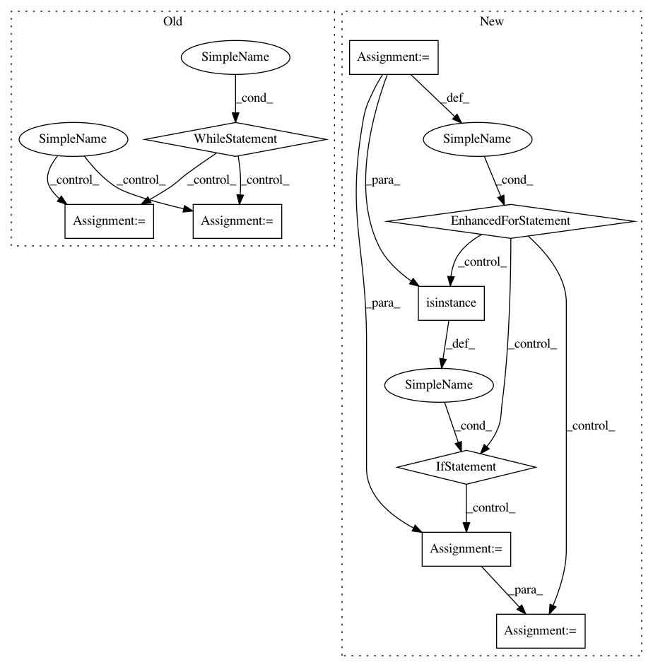

956f6056f9a22ea900f8e4e5f4d84756634842b4,homeassistant/components/automation/__init__.py,,setup,#Any#Any#,36
Before Change
config_key = DOMAIN
found = 1
while config_key in config:
// Check for one block syntax
if isinstance(config[config_key], dict):
config_block = _migrate_old_config(config[config_key])
name = config_block.get(CONF_ALIAS, config_key)
_setup_automation(hass, config_block, name, config)
// Check for multiple block syntax
elif isinstance(config[config_key], list):
for list_no, config_block in enumerate(config[config_key]):
name = config_block.get(CONF_ALIAS,
"{}, {}".format(config_key, list_no))
_setup_automation(hass, config_block, name, config)
// Any scalar value is incorrect
else:
_LOGGER.error("Error in config in section %s.", config_key)
found += 1
config_key = "{} {}".format(DOMAIN, found)
return True
def _setup_automation(hass, config_block, name, config):
After Change
def setup(hass, config):
Setup the automation.
for config_key in extract_domain_configs(config, DOMAIN):
conf = config[config_key]
if not isinstance(conf, list):
conf = [conf]
for list_no, config_block in enumerate(conf):
name = config_block.get(CONF_ALIAS, "{}, {}".format(config_key,
list_no))
_setup_automation(hass, config_block, name, config)
return True
def _setup_automation(hass, config_block, name, config):
In pattern: SUPERPATTERN
Frequency: 3
Non-data size: 9
Instances
Project Name: home-assistant/home-assistant
Commit Name: 956f6056f9a22ea900f8e4e5f4d84756634842b4
Time: 2016-03-13
Author: paulus@paulusschoutsen.nl
File Name: homeassistant/components/automation/__init__.py
Class Name:
Method Name: setup
Project Name: jhfjhfj1/autokeras
Commit Name: 16474aee0c575e615c78d32f2a170c3d7f8f0082
Time: 2017-12-30
Author: jhfjhfj1@gmail.com
File Name: autokeras/graph.py
Class Name: Graph
Method Name: produce_model